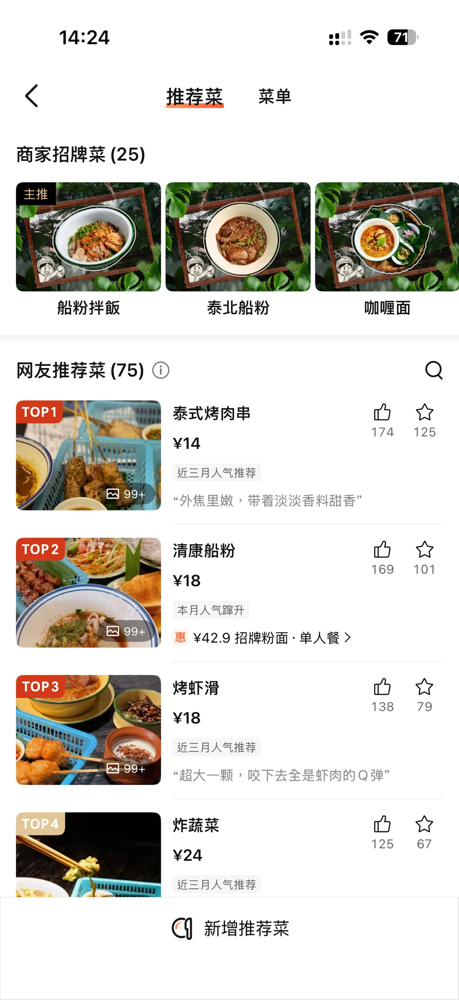
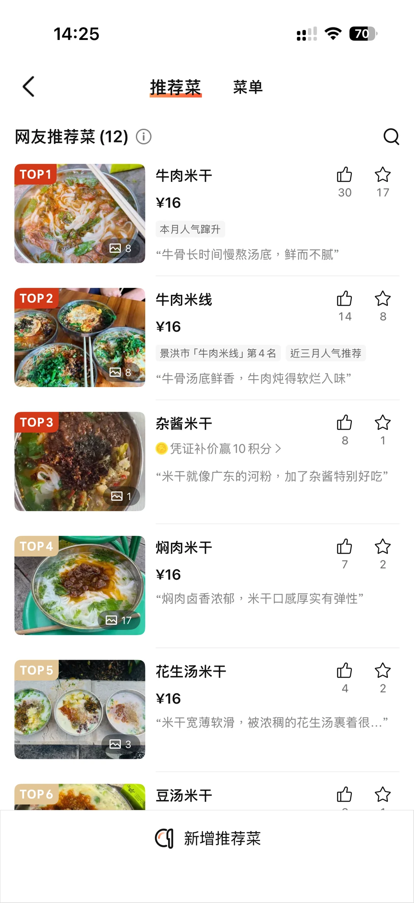
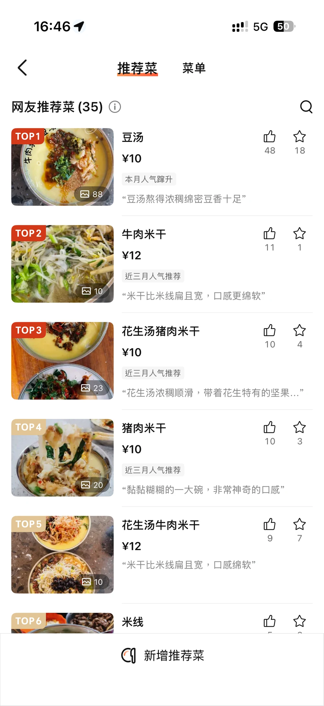

DAY 1 · 10月13日
午餐，选哪一家？
5 家午餐备选，查看口味、营业时间和实拍菜单。
午餐备选
5 个选择 · 营业时间供安排参考



特色：稀豆粉米干、花生汤米干，十余种自助傣味小料，可加腊肠/卤帽
✅ 优点：24小时营业，豆汤浓稠豆香足；人均10-16元；本地人早餐&宵夜；小料自由
❌ 缺点：黏糊口感很特别，有人吃不惯；只主打粉面，炒菜很少
环境：临街老店，简易桌椅，内外摆，朴素市井风

玉波早点店营业至 11:30，适合较早安排。页面中的口味说明和营业时间按提供的选项资料整理，出发前可再确认。